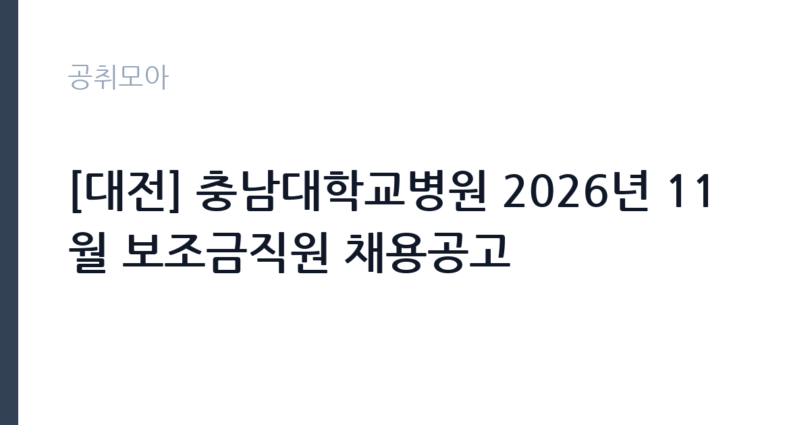

[공공기관] [대전] 충남대학교병원 2026년 11월 보조금직원 채용공고
충남대학교병원 · 대전 · 마감 2026-11-16 (D-14) · 출처 잡알리오

한눈에 보는 모집 조건
| 기관 | 충남대학교병원 |
|---|---|
| 공고명 | [대전] 충남대학교병원 2026년 11월 보조금직원 채용공고 |
| 고용형태 | 정규직 |
| 근무지 | 대전 |
| 게시일 | 2026-11-02 |
| 마감일 | 2026-11-16 (D-14) |
지원자격, 이렇게 읽으세요
- 직종 및 분야별 응시자격 첨부파일 참고
정규직 채용은 기간의 정함이 없는 근로계약을 전제로 합니다. 수습 기간을 두고 평가한 뒤 정규직으로 확정하는 절차가 일반적이며 기관의 인사 규정과 임금 체계를 적용받습니다. 이번 공고는 충남대학교병원이 직접 진행하는 자체 전형입니다. 직종별 요구 자격과 경력이 다르게 제시되므로 본인이 지원할 직종의 요건만 확인하면 됩니다. 보조금 사업 특성상 사업 기간과 근무 조건이 일반 계약직과 다를 수 있으므로, 근로계약 기간과 사업 종료 시 처우를 먼저 확인하십시오. 병원 인사규정상 결격사유와 정년 기준이 적용되고, 남자는 병역을 마쳤거나 면제되어야 합니다. 채용 인원과 근무 부서는 공고문 표에 정리되어 있습니다. 응시 자격 판단이 애매하면 접수 전에 채용 담당 부서로 문의하는 편이 안전합니다. 우대 사항에 해당하면 증빙을 반드시 첨부해야 하며, 누락하면 가점 없이 평가됩니다. 응시 자격 판단이 애매하다면 접수 전에 채용 담당 부서로 문의하는 편이 안전합니다. 서류 제출 후에는 소명 기회가 없습니다.
이 공고의 포인트
이 공고의 첫 번째 포인트는 고용 형태입니다. 수습 기간 평가를 통과하면 기간의 정함이 없는 신분이 되어 고용이 안정됩니다. 두 번째는 업무 범위가 명확하다는 점입니다. 보조금직원(직종별 채용) 직무로 채용되므로 배치 이후 담당 업무가 크게 흔들리지 않습니다. 세 번째는 근무지입니다. 대전 지역 근무로 수도권 공고에 비해 지원자 분포가 넓지 않아 상대적으로 경쟁이 분산되는 경우가 있습니다. 직무 특성이 분명해 본인의 경험과 맞는지 빠르게 판단할 수 있습니다. 같은 직무로 함께 올라온 공고 6건 가운데 마감이 중간에 위치하므로 다른 공고와 일정이 겹치는지 확인하십시오. 선발 인원은 공고문에 명시되어 있으니 모집분야 항목을 함께 확인하십시오.
전형은 어떻게 진행되나
서류전형과 면접전형 외에 직무수행능력 평가가 붙는 경우가 있습니다. 평가 방식은 공고문에 구체적으로 적혀 있으므로 어떤 항목에 배점이 높은지 먼저 파악하십시오. 면접에서는 지원 동기보다 실제 업무 경험에 대한 질문이 많고, 답변의 구체성이 평가를 가릅니다. 전형 일정은 서류 마감 이후 빠르게 진행되므로 연락 가능한 번호를 정확히 기재하고 문자와 메일을 수시로 확인해야 합니다. 최종 단계에서는 결격사유 조회와 신체검사가 진행됩니다. 온라인 접수는 마감 시각이 분 단위로 정해지므로 시스템 시간을 기준으로 판단해야 합니다.
원문에서 확인한 전형 방식
직종 및 분야별 응시자격 첨부파일 참고
이런 분께 추천해요
- 지원 직종의 요건을 충족하는 분
- 사업 기간과 예산 관리 방식을 이해하는 분
- 병원 환경 근무가 가능한 분
지원 전 체크리스트
- 응시자격 요건과 경력 기준을 충족하는가 — 경력은 증명서로 입증해야 합니다
- 수습 기간과 정규직 전환 조건을 확인했는가
- 제출서류 목록을 모두 준비했는가 — 누락 시 서류 단계에서 탈락합니다
- 접수 마감 2026-11-16 이전에 접수 방식을 확인해 제출했는가
모집 일정과 제출 타이밍
공고 게시일은 2026-11-02, 접수 마감은 2026-11-16입니다. 준비 기간은 약 14일로 서류 준비와 자격 증빙을 함께 처리하기에는 넉넉하지 않은 편입니다. 첫 이틀 안에 공고문과 첨부 서식을 내려받아 요건을 확인하고 남은 기간에 증빙 서류를 발급받는 일정이 현실적입니다. 면접은 서류 합격자 발표 후 짧은 간격으로 진행되는 경우가 많으므로 서류 제출과 동시에 면접 준비를 시작하는 편이 안전합니다. 마감일에는 접수 시스템이 몰리므로 하루 전까지 제출을 마치는 것이 좋습니다. 제출 서류는 공고문에 적힌 순서대로 정리하면 담당자가 확인하기 쉬워 누락이 줄어듭니다.
직무 이해하기: 공공기관
충남대학교병원의 보조금직원은 국가나 지방자치단체의 보조금으로 운영되는 사업의 인력입니다. 이번 11월 채용은 직종별로 나누어 선발하며, 직종은 첨부 공고문의 모집분야 표에서 확인해야 합니다. 보조금 사업 인력은 특정 사업의 목적에 맞춰 배치되므로, 같은 병원의 다른 직종과 업무 성격이 다릅니다. 사무 지원, 사업 운영 보조, 검사·진료 지원 같은 분야가 포함될 수 있습니다. 사업 기간이 정해져 있어 근무 종료 시점이 사업 종료와 맞물립니다. 현장 업무와 사무 업무의 비중은 기관의 사업 일정에 따라 계절별로 달라집니다.
자기소개서 작성 팁
지원서는 지원 직종과 사업에 대한 이해를 함께 보여주는 것이 핵심입니다. 수행했던 업무와 성과를 수치로 제시하고, 보조금 사업의 특성상 예산과 실적 관리가 중요하다는 점을 연결하십시오. 사업 기간 동안 달성할 목표를 구체적으로 쓰면 준비도가 드러납니다. 병원 환경에서 일한 경험이 있다면 위생·개인정보 관리 사례로 보완하십시오. 문항별 글자 수 제한을 먼저 확인하고, 각 문항의 첫 문장에 결론을 배치하는 방식이 읽기 쉽습니다. 지원 동기는 기관의 어떤 사업에 기여하겠다는 한 문장으로 시작하고, 이어서 본인의 경험을 근거로 붙이십시오. 감점을 피하려면 다른 기관에 보낼 수 있는 범용 문장을 그대로 쓰지 않는 것이 중요합니다. 기관 이름과 사업명이 문장 안에 자연스럽게 들어가야 준비도가 드러납니다.
면접 준비 포인트
면접에서는 사업에 대한 이해와 실무 경험을 확인합니다. 지원 직종이 어떤 보조금 사업에 속하는지, 그 사업에서 본인이 어떤 역할을 할 수 있는지 구체적으로 답하십시오. 사업 기간이 정해져 있다는 점을 인정하고 그 기간에 남길 결과물을 계획으로 제시하면 좋습니다. 병원 근무 경험과 응대 경험도 소재가 됩니다. 지원 기관의 최근 사업이나 조직 개편 내용을 확인해 두면 지원 동기 질문에서 차이가 납니다. 면접 당일 신분증과 제출서류 원본을 요구하는 경우가 있으니 공고문의 준비물 목록을 확인하십시오.
급여·근무조건 읽는 법
보조금직원의 보수는 병원의 직종별 임금 기준과 사업 예산에 따라 정해지며, 사업 기간이 근무 기간과 연동됩니다. 사업 종료 시 계약이 함께 끝나는 경우가 많으므로 월 급여와 근무 개월 수를 곱한 총액으로 비교하십시오. 수당과 4대 보험 적용 여부도 함께 확인해야 합니다. 구체적 금액은 공고문 처우표에서 확인할 수 있습니다. 2026년 적용 최저임금은 시급 10,320원, 월 환산 2,156,880원(주 40시간·209시간 기준)입니다. 고용노동부 고시 제2025-47호로 확정된 금액입니다. 공고문에 금액이 제시되지 않은 항목은 원문 보수표나 처우 설명에서 확인해야 하며 확인되지 않은 수치는 쓰지 않는 것이 원칙입니다. 비교할 때는 월 급여뿐 아니라 상여·명절휴가비·복지포인트·초과근무수당까지 포함한 연간 총액으로 계산하십시오. 기간제라면 계약 기간 동안의 총액을, 무기계약이라면 호봉 상승과 정년까지의 누적 소득을 기준으로 판단하는 편이 정확합니다.
자주 묻는 질문
- 선발 인원은 몇 명인가요?
공고문의 모집분야 항목에 직종별 인원이 표로 제시되어 있습니다. 첨부된 공고문 원문에서 확인하십시오. - 근무지는 어디인가요?
대전 지역의 충남대학교병원 소속 근무지입니다. 세부 주소와 출퇴근 조건은 원문 공고문에서 확인할 수 있습니다. - 보수는 얼마인가요?
채용 신분(정규직)과 기관 임금 규정에 따라 정해지며 구체적인 금액은 공고문 처우 항목에 제시됩니다. 금액이 공개되지 않은 경우에는 원문의 보수표를 확인하십시오.
함께 보면 좋은 공고
[공공기관] 2026년 한국특허정보원 체험형 청년인턴 채용 — 마감 2026-11-18[공공기관] 한국폴리텍대학 진주캠퍼스 행정지원직(사무직원 휴직 대체인력) 채용 공고 — 마감 2026-11-10[공공기관] 대구경북첨단의료산업진흥재단 2026년 3차 정원외 계약직원 채용공 — 마감 2026-11-17출처: 잡알리오 공개정보를 바탕으로 공취모아가 정리한 안내글입니다. 모집 조건·일정은 변경될 수 있으니 지원 전 반드시 원문 공고문을 확인하세요. 본 글은 정보 제공용이며 합격을 보장하지 않습니다.